julian_ra2, obtenido de auth.me mediante AuthContext.Se tomó el backend de la Práctica 4 (Django + JWT) y se le creó un frontend en React siguiendo el manual. También se integró una API de terceros en el Dashboard y se creó un endpoint que consume un Web Service SOAP. Este documento explica lo que se hizo en cada parte y cómo quedó. Las capturas son del proyecto funcionando en la computadora de desarrollo.
| Parte | Requisito | Cómo quedó | Figuras |
|---|---|---|---|
| 1 | Crear el proyecto | React con Vite y sus dependencias instaladas | 2 a 5 |
| 1 | Configurar rutas | React Router 6 con layouts de admin, cliente y común | 4 y 6 |
| 1 | Página de login | Conectada a /api/token/; guarda el token y redirige al Dashboard | 10 a 12 |
| 1 | AuthContext | Hook useAuth; la sesión sigue activa al recargar | 13 a 15 |
| 1 | Página de registro | Formulario validado y endpoint /api/auth/register/ | 7 a 9 |
| 2 | API de terceros | Widget de clima en el Dashboard con Open-Meteo y fetch | 14 y 16 |
| 3 | Web service propio | /api/auth/me/ responde 401 sin token y 200 con token | 17 |
| 3 | Consumo SOAP | /api/soap/countries/<iso>/ consume el servicio con zeep | 18 y 19 |
Las capturas que pide la actividad llevan la marca Captura solicitada en su pie de figura.
Se conservó el proyecto tienda_online de la Práctica 4 con su base de datos MySQL, sus productos y su endpoint de JWT. Se instalaron django-cors-headers, para que React pueda llamar a la API, y zeep, para consumir SOAP.
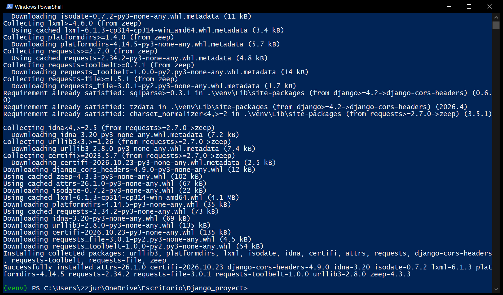
django-cors-headers y zeep en el entorno virtual.Se crearon dos aplicaciones nuevas: users (registro y datos del usuario) y countries (consumo SOAP). En settings.py se activó CORS solo para el frontend y se amplió la vigencia del token:
SIMPLE_JWT = {
'ACCESS_TOKEN_LIFETIME': timedelta(hours=1),
}
CORS_ALLOWED_ORIGINS = [
'http://localhost:5173',
'http://127.0.0.1:5173',
]
El proyecto se creó con Vite (manual, pág. 13) en la carpeta frontend, a un lado del backend.
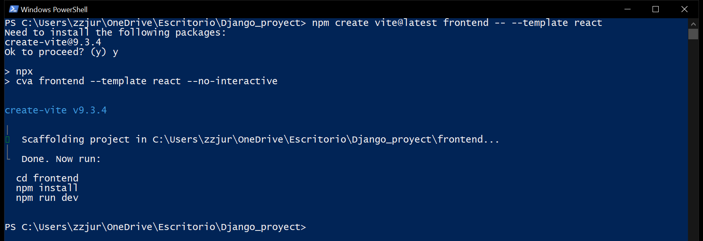
npm create vite@latest.Después se instalaron las dependencias. Vite trae React 19, pero semantic-ui-react solo es compatible hasta React 18, por lo que se fijó esa versión. React Router se fijó en la versión 6 porque es la que pide la actividad.
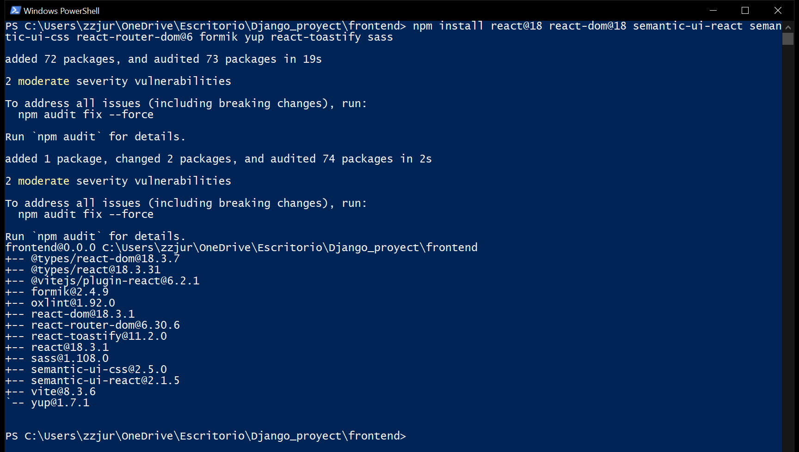
Se siguió la estructura del manual (págs. 15 a 20): una carpeta por responsabilidad, con un archivo index.jsx que reexporta los componentes de cada carpeta.
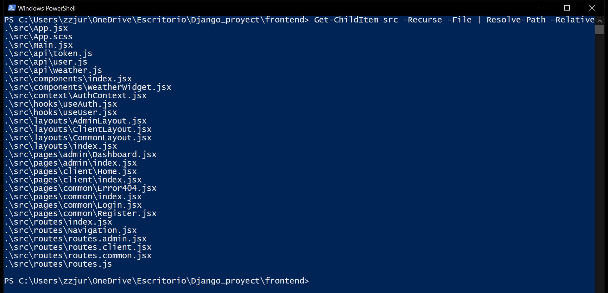
frontend/src.| Ruta | Layout | Página | Acceso |
|---|---|---|---|
/ y /home | ClientLayout | Home | Público |
/login | CommonLayout | Login | Público |
/register | CommonLayout | Register | Público |
/dashboard | AdminLayout | Dashboard | Requiere sesión |
* | CommonLayout | Error404 | Público |
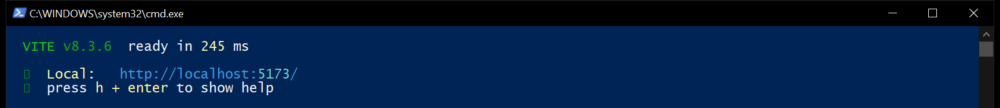
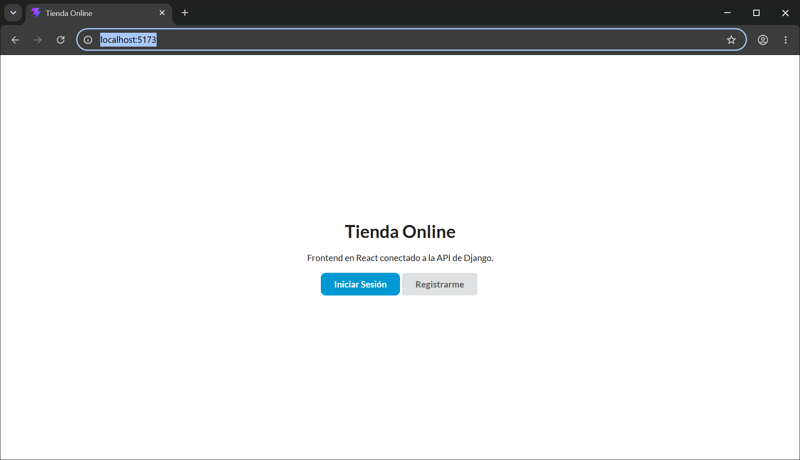
En el backend se creó POST /api/auth/register/, de acceso público. El serializador rechaza correos repetidos, aplica los validadores de contraseña de Django y guarda la contraseña hasheada con create_user.
class RegisterUserView(generics.CreateAPIView):
permission_classes = [AllowAny]
serializer_class = RegisterUserSerializer
En React, el formulario valida con Formik y Yup: el usuario sin espacios, un correo válido, una contraseña con mayúscula, número y carácter especial, y la confirmación de la contraseña. Los errores del servidor, como un usuario repetido, se muestran con un toast.
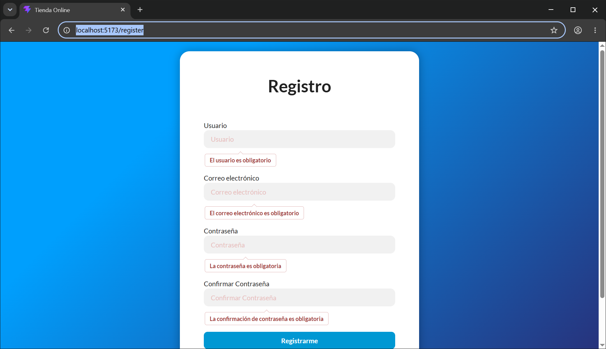
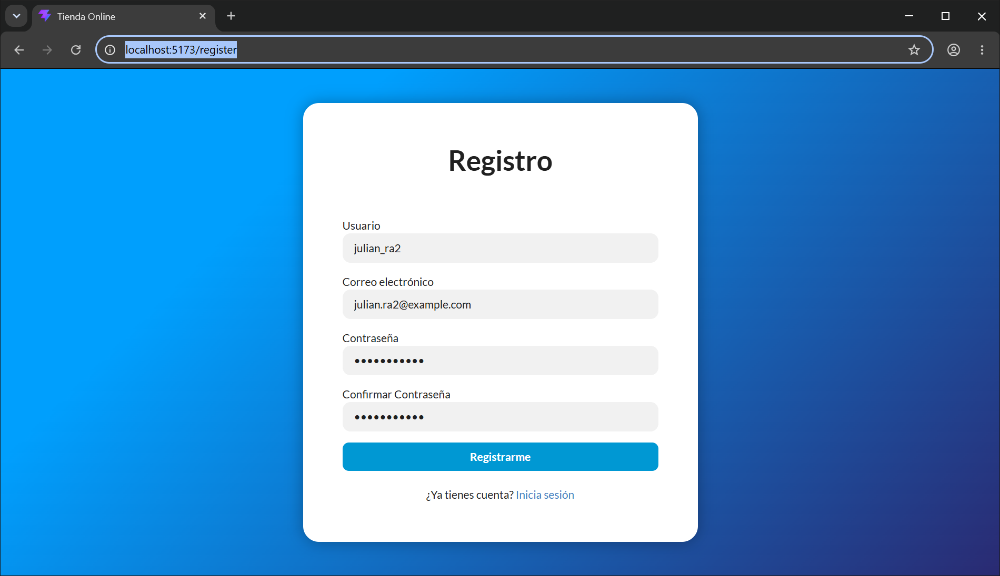
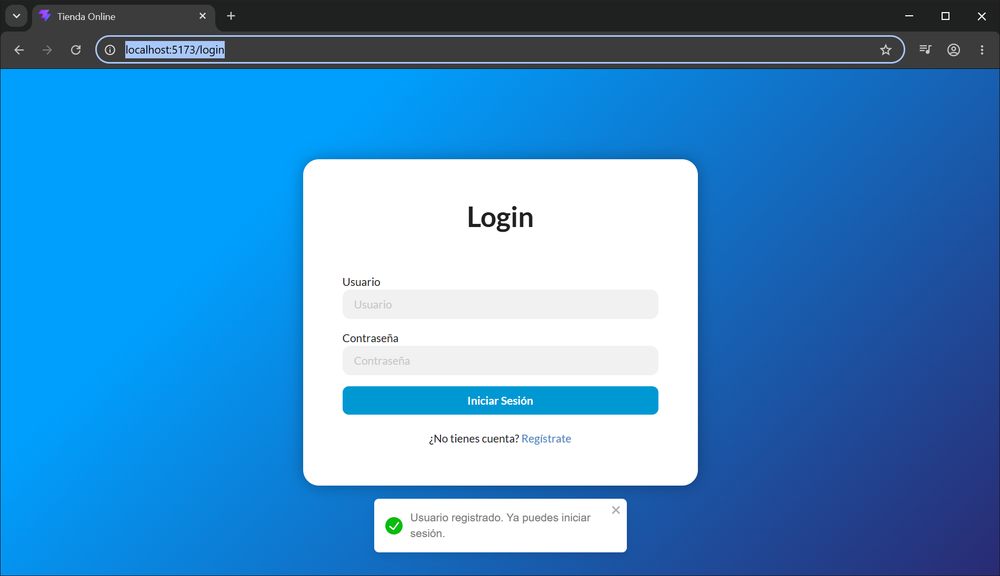
El formulario llama a /api/token/, el endpoint de JWT de la Práctica 4. Si las credenciales son correctas, escribe el token en la consola, lo guarda en localStorage y redirige al Dashboard. Si fallan, muestra un toast.
onSubmit: async (formValues) => {
try {
const { access } = await loginApi(formValues);
console.log("Token obtenido:", access);
await login(access);
navigate("/dashboard");
} catch (error) {
toast.error(error.message);
}
},
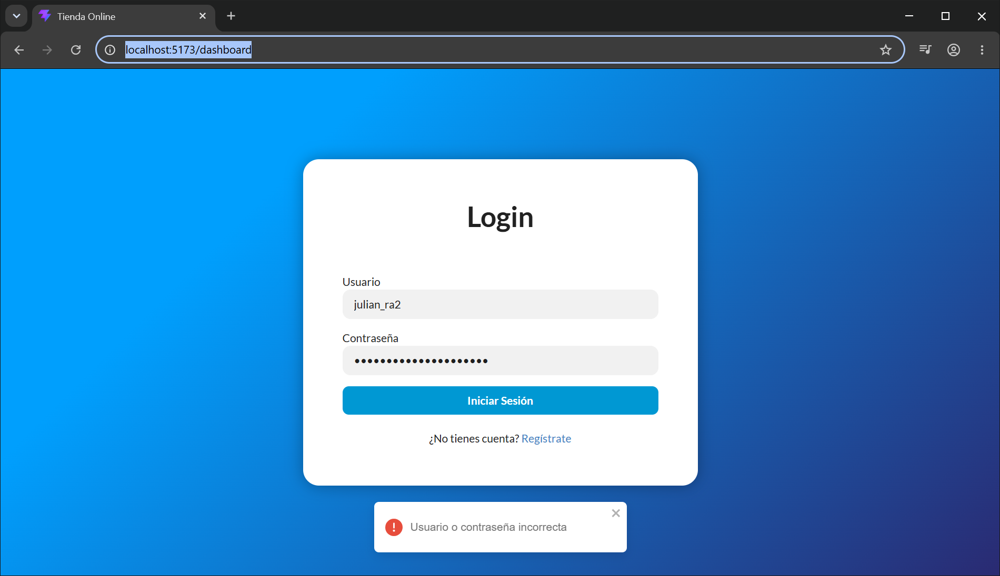
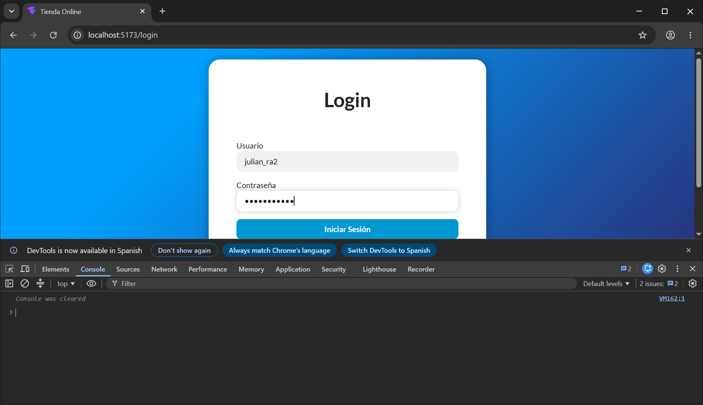
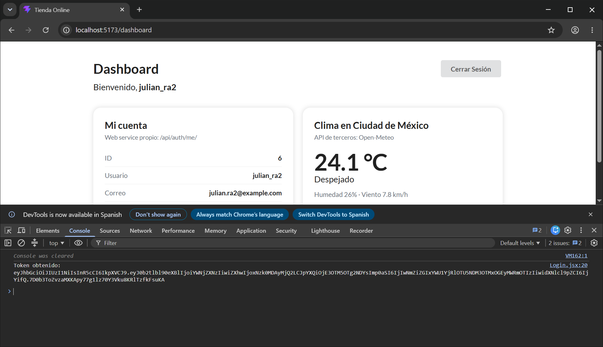
Login.jsx:20). La consola se limpió antes de enviar el formulario para que el token se viera sin otros mensajes.AuthContext guarda los datos de la sesión y el hook useAuth los comparte con los componentes. Al abrir la aplicación se busca el token en localStorage y se piden los datos a /api/auth/me/. Si el token caducó o no es válido, se borra y aparece el login.
const login = async (token) => {
setToken(token);
try {
const me = await getMe(token);
setAuth({ token, me });
} catch (error) {
logout();
throw error;
}
};
AdminLayout protege el Dashboard: sin sesión muestra el login, aunque se escriba la dirección a mano.
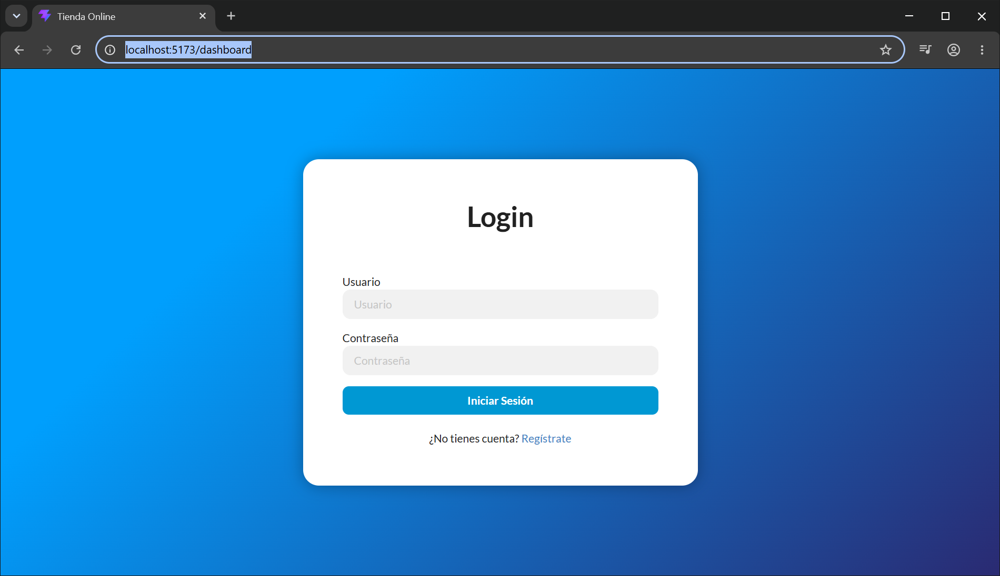
/dashboard sin sesión se muestra el login.
julian_ra2, obtenido de auth.me mediante AuthContext.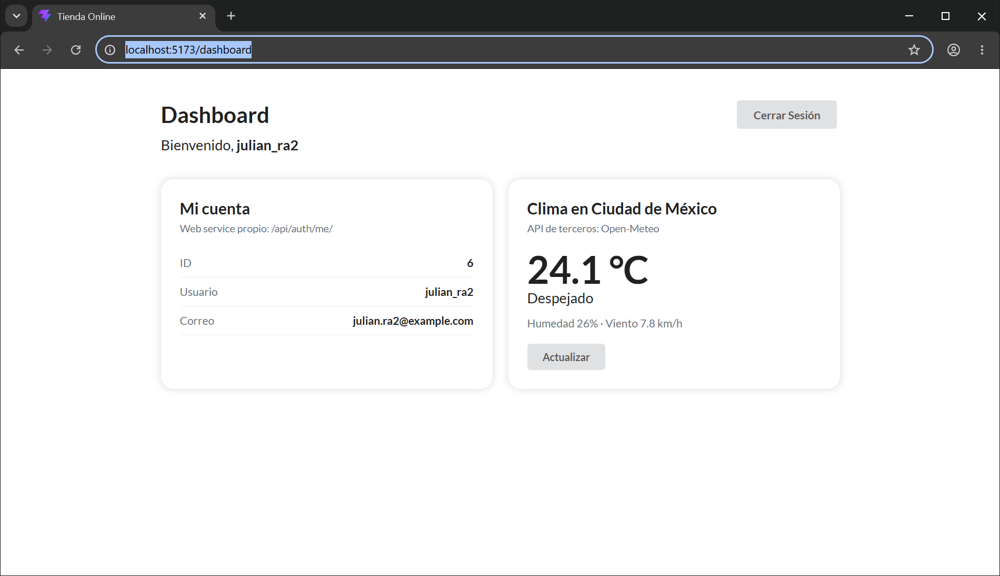
En el Dashboard se agregó un widget con el clima actual de la Ciudad de México. Usa Open-Meteo, que es gratuita y no necesita clave. La petición se hace con fetch desde el navegador. El botón Actualizar vuelve a consultar la API y, si falla, el widget muestra un mensaje de error.
const params = new URLSearchParams({
latitude: CITY.latitude,
longitude: CITY.longitude,
current: "temperature_2m,relative_humidity_2m,wind_speed_10m,weather_code",
timezone: "auto",
});
const response = await fetch(`${WEATHER_URL}?${params}`);
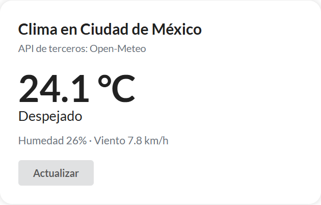
GET /api/auth/me/ devuelve los datos del usuario autenticado y exige un JWT válido. A diferencia del manual, la respuesta no incluye la contraseña hasheada.
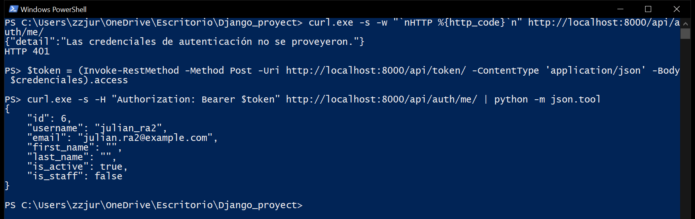
/api/token/ devuelve los datos del usuario.Se creó GET /api/soap/countries/<iso>/, protegido con JWT. Django consume la operación FullCountryInfo del servicio público CountryInfoService y devuelve la respuesta en JSON. La lógica está en una capa de servicios, igual que en products.
def obtener_pais(iso_code):
try:
respuesta = get_client().service.FullCountryInfo(sCountryISOCode=iso_code.upper())
except (ZeepError, RequestException) as exc:
raise SoapServiceError(str(exc)) from exc
pais = serialize_object(respuesta, dict)
if not pais['sISOCode']:
return None
...
Al probar el servicio se encontraron dos detalles: solo reconoce el código ISO en mayúsculas, y un país inexistente no produce un error sino una respuesta con sISOCode vacío. Por eso el código convierte el ISO a mayúsculas y el endpoint responde 404 cuando el país no existe. Si el servicio no responde, devuelve 502.
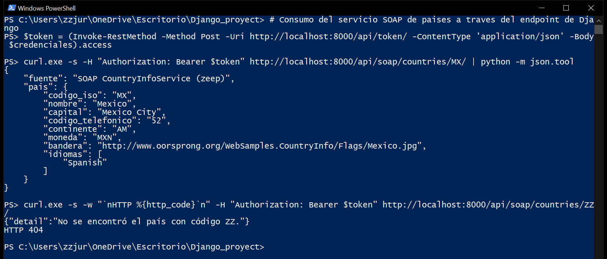
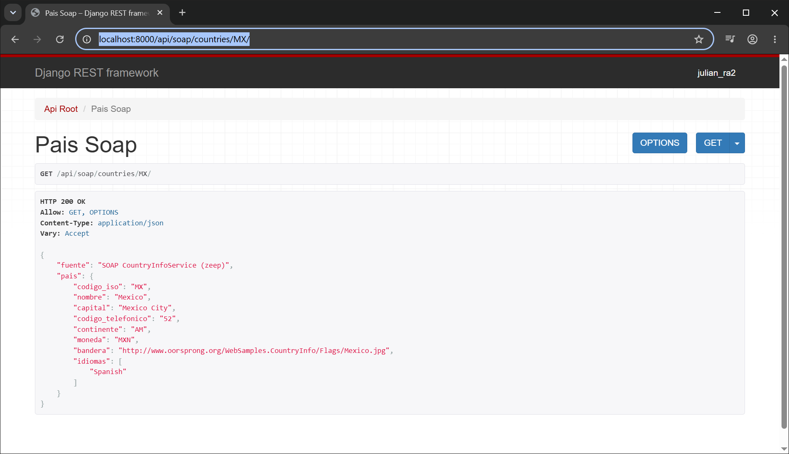
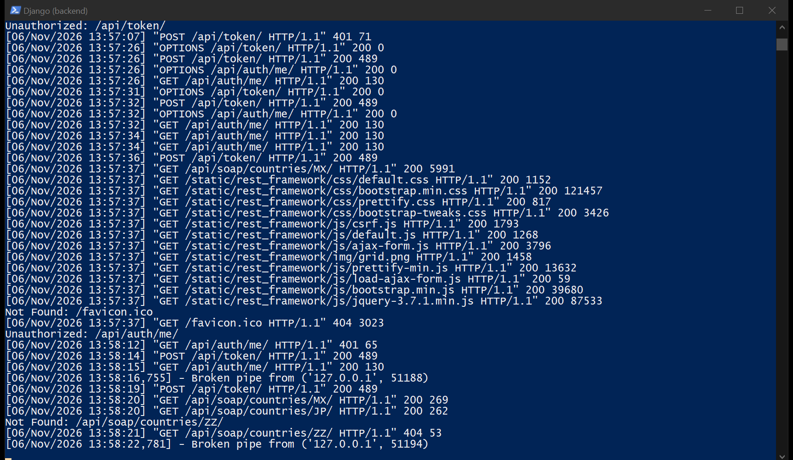
auth/me y SOAP. Las líneas Broken pipe ocurren cuando curl cierra la conexión y no son errores de la aplicación.Se agregaron 14 pruebas automáticas a las 8 que ya tenía el proyecto: 8 para users y 6 para countries. Las de SOAP simulan el servicio externo para no depender de la red. Las 22 pasan.
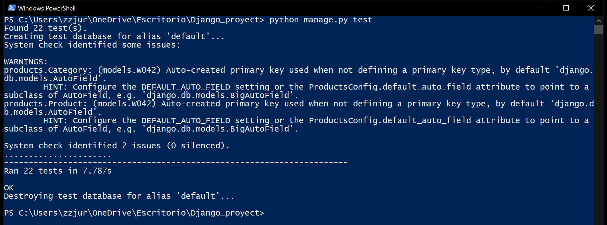
python manage.py test: 22 pruebas correctas. Los avisos W042 ya existían y no afectan el funcionamiento.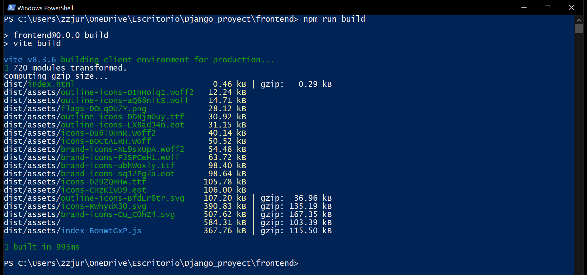
npm run build: el frontend compila para producción.También se hicieron estas comprobaciones:
Se siguió el manual, pero algunas partes se adaptaron al backend de la Práctica 4 o se corrigieron porque tenían errores o no funcionaban con las versiones actuales.
| Cambio | Motivo |
|---|---|
| Login con usuario en lugar de correo | El correo requiere el modelo de usuario de las págs. 7 y 8, que obliga a borrar la base de datos. La Práctica 4 usa el modelo de Django y su base ya tiene datos. |
Rutas /api/token/ y /api/auth/... sin /v1/ | Se respetó el endpoint de JWT que ya existía. |
| React 18 y React Router 6 fijados | Vite instala React 19, que no es compatible con semantic-ui-react. |
cssMinify: false en Vite | El build fallaba: el minificador de Vite 8 rechaza un selector de semantic.min.css, que ya viene minificado. |
Error404 con export con nombre | export * no reexporta el export default del manual, así que { Error404 } no se podría importar. |
await login(access) antes de redirigir | Sin await, la redirección ocurre antes de tener los datos del usuario. |
Manejo de token inválido en getMeApi y AuthContext | El manual no revisa la respuesta, así que con un token caducado mostraría un Dashboard sin datos. |
| Token con vigencia de 1 hora | Con los 5 minutos por defecto, la sesión caducaría muy pronto. |
UserSerializer sin el campo password | En el manual, /auth/me/ expone la contraseña hasheada. |
Registro con CreateAPIView | Es más simple que el ModelViewSet del manual, cuyo método post no se ejecuta y usa request.user en lugar de request.data. |
CORS limitado a localhost:5173 | Es más seguro que permitir cualquier origen, y el frontend no necesita más. |
| Idioma de Django en español | Los errores del servidor aparecen en los toasts de la interfaz. |
.gitignore, requirements.txt y README | El proyecto no los tenía. Además, se dejaron de versionar los archivos .pyc. |
El código quedó en la rama ra2-django-react del repositorio. El README.md explica cómo crear la base de datos, instalar y ejecutar el backend y el frontend, y lista los endpoints.
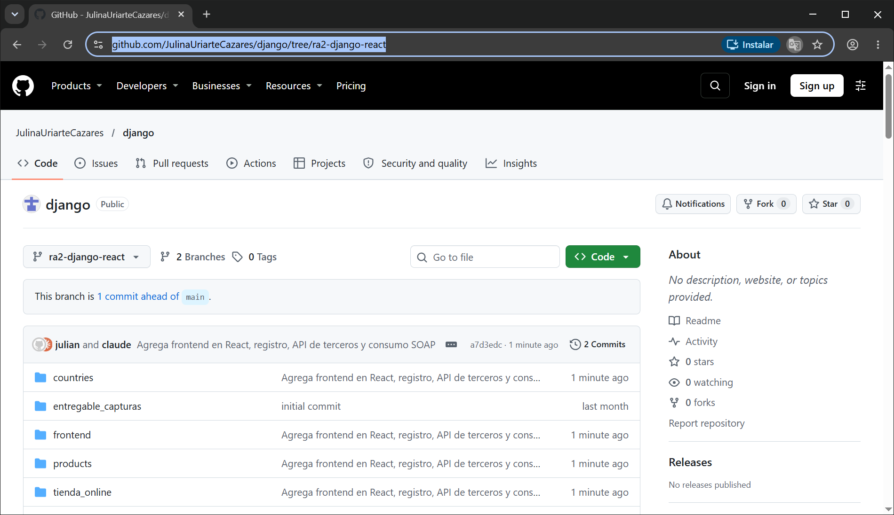
La aplicación quedó completa: una persona se registra, inicia sesión con JWT, conserva su sesión al recargar y ve en el Dashboard sus datos y el clima. El backend expone además un endpoint protegido propio y otro que consume un servicio SOAP.
semantic-ui-react muestra en la consola avisos de findDOMNode y defaultProps. Vienen de la librería y no afectan el funcionamiento.npm audit reporta 2 avisos moderados de React Router 6, y corregirlos requiere pasar a la versión 7. Se conservó la 6 porque la pide la actividad; los enlaces de la aplicación son fijos y no hay renderizado en servidor.